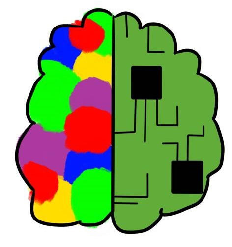
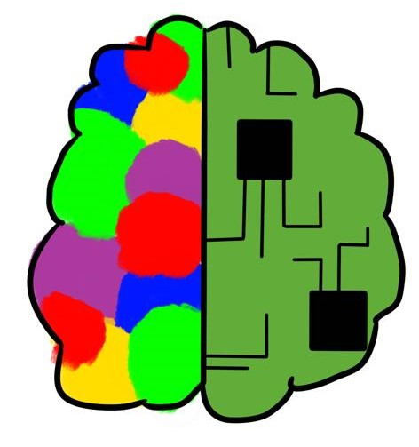

ABOUT ME
I am Dané de Beer, a creative, logical and enthusiastic person. Other than my amazing characteristics, I also enjoy drawing, gaming and traveling. Growing up on a farm, I developed a great love for animals, of which I now own 2, a cat (Taiga) and a dog (Akihiro).
 
